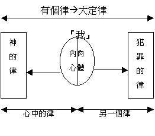

重溫：
上一次我們查考羅５：１－１１曾題及信耶穌有甚麼特別果效？這果效有甚麼特別的地方？引言：
今日我們查考信主後另外一種的改變---勝過罪權的改變，你認為自己是否一個時常勝過罪 惡的基督徒? Why? 聖經對勝過罪權有何看法? 讓我們今日看一看…
個人讀經：７：１８－８：５
三：
超卓的果效（PART B）A.『我』�堶悸瑣啋p
１．在V１８－２５時常重覆一些甚麼字詞？
我,律,肢體,肉體,願意
２．先看一看最多題到的『我』字，在V２５b保羅將『我』分為那兩個元素？這兩個元素真正是指甚麼？(可參考羅 １３：１４；加５：２４；５：１７）有甚麼不同之處/喜好/願望?
肉體--不良善,行惡 ,obey 罪的律
內心--obey 神的律,良善
３．經文又時常題到『律』，按個人理解，何謂『律』(LAW)？ 可包含那幾個意思?
law--定律,規則,定錯與對,有權力性
４．在V１８－２５題到有那幾種律？ 代表甚麼？ 試寫下
|
聖經中的名稱( …律) |
經文 |
性質(定律/標準) |
內容 |
|
V.21 |
定律 |
我願意為善時，有惡同在 |
|
標準 | 良善,無罪 | |
|
定律 | 傾向罪的律 | |
|
定律 | 傾向神的律 | |
|
標準 | 不好,罪 |
５．嘗試用圖畫表達『我 (內心/肉體) 』『律』內心中的交戰情況 『我』的律

比較各組員圖畫，嘗試選出最能代表V１８－２５內心交戰情況
６．在V１８－２４內心交戰中，最終的結果是怎樣？ 保羅有甚麼感受？
有沒有試過保羅的類似經歷？當時感受如何？能否靠自己內心得勝？試分享
７．有沒有轉機？ 關鍵在甚麼？
究竟基督作了甚麼工作，我們可以『靠著主』就能勝過罪的權勢？
B. 在基督�堛滷o勝
1.羅８：１題到『不定罪了』，有沒有試過被定罪的經歷？試分享....
但基督作了甚麼（在８：１、３中）？ 帶來甚麼果效？ 在日後的日子，有沒 有人可控告我們？ Why?
２．除了不定罪外，８：２我們在基督�堶惘h了什麼？ 對先前�堶惜漱萿漸瞉啈酗偵羆v響？ 先前的交戰圖畫會怎樣改寫？ 若果再用圖畫表示，如何表示？
３．有沒有試過類似『得勝』『被釋放』的經歷？ 有沒有信心自己可得勝罪惡? Why?
４．羅８：４更題到我們不單只從罪中得釋放，更可以達到甚麼地步？ 我們以前可否達到?
５．另外，羅８：５又題到肉體的事，和聖靈的事，指甚麼？（參看加5:19-23）
６．要達到成就律法的義／神的義，關鍵在甚麼？(v.4)
７．你自己覺得在生活中，順從聖靈，體貼聖靈的事多，還是順從肉體，體貼肉體的事多？可否舉一，兩個生活經歷過的例子。
總結：
在７：１８－８：５中，信耶穌帶來甚麼奇妙的果效？從經文中，又學到甚麼功課？
下次查經：超卓的盼望－信耶穌後將來有甚麼盼望？